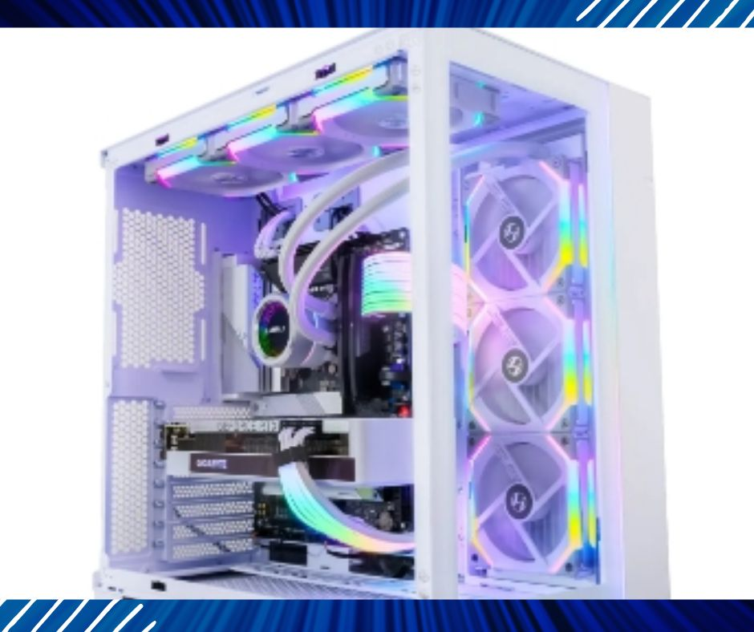

Finding the right graphics card for your computer can be tricky. With all of the different brands and models available, it can be hard to know which one is the best for your needs. In this blog post, we’ll discuss the different types of white graphics cards and the features to look for when making your choice. Read on to find the perfect card for your computer!
ASUS ROG STRIX NVIDIA GeForce RTX™ 3090 White OC Edition
Using the latest generation of NVIDIA Turing architecture, the RTX 20 Series, gaming graphics cards are designed from the ground up for enhanced comfort and smooth gameplay. The NVIDIA GeForce RTX 3090 is the top-of-the-line gaming graphics card in the RTX 3000 series, built for max performance in all the latest games with settings maxed out.
The NVIDIA GeForce RTX 3090 delivers amazing experiences in the latest games, and it also converts older games into Virtual Reality, taking you to new places with immersive visuals and sounds.
The ASUS ROG STRIX RTX3090 Gaming Graphics Card is a perfect combination of the TOP-OF-THE-LINE RTX 3000 graphics processing unit (NVIDIA GeForce RTX 3090), overclocked chips, memory, and cooling to keep things cool even when you’re pushing the 18xx-series GPUs to their limit. The STRIX is about as high-end as it gets from ASUS and has all the bells and whistles: a metal backplate, RGB lighting (you can customize the colors through the ROG software), and some cool “fans-turn-blue” features when you’re gaming.
The STRIX cooling system uses an advanced vapor chamber design with triple fan arrays to draw air directly over the heatsink, which is optimized to keep temperatures low. The efficient 1- GHz dual fan design reduces noise while maintaining peak performance. The RTX 3090 is sufficiently powerful that it requires an 8+8-pin power connector, so be sure your PSU can support the power draw of this graphics card.
The ASUS ROG STRIX RTX3090 Gaming Graphics Card comes with either a 15-way DVI- DisplayPort 1.4 (1x) or a 3-way HDMI 2.0b (1x) connector, so you can use it with most older monitors without a converter. It also comes with a 1/4-inch threaded hole for hooking the graphics card into the ROG Strix HB Headset Bracket (not included — see our other listings), so it can stay firmly in place as you navigate your games. The RTX3090 is a great choice if you’re looking for a high-end gaming experience, and it’s perfect for gamers who want to convert their older games into Virtual Reality via the PS4 and PS VR, or the Xbox One and Xbox VR.
GIGABYTE GeForce RTX 3080 Ti Vision OC
The Gigabyte GeForce RTX 3080 Ti Vision OC is a beastly graphics card that will allow you to play games at 4K, 1440p, and even 1080p. That’s right, this card can handle all of those resolutions with ease without breaking a sweat!
The GTX 3080 Ti comes with a massive 12GB of GDDR6 memory, which gives you the ability to run demanding titles like PUBG or Fortnite at 60 FPS+ without even breaking a sweat.
The rest of the specs on this card are nothing short of impressive as well. It has CUDA cores that are higher than the previous generation cards (10240 vs 8192), and it has an overclocked base clock speed of 1365 MHz compared to 1252 MHz. The boost clock speed is also 1710 MHz compared to 1645 MHz on the previous generation cards.
This product has been professionally inspected and tested by Amazon-qualified suppliers. The product may have minimal scratches or dents, and a battery with at least 80% capacity. Box may be generic and accessories may not be original but will be compatible and fully functional.
Zotac Gaming Geforce RTX 3080 Trinity OC White Edition
The Zotac Gaming Geforce RTX 3080 is a powerful, all-around graphics card that replaces the RTX 2080. It features the latest Turing architecture and a massive 445 W TDP. The chip itself consists of 46 mm² of silicon, 875M transistors, and 18.6 Mh/s of computing performance.
The Gaming RTX 3080 has a striking white color scheme and a strong 100°C thermal threshold. The card features a 260 mm length, so it might not fit in compact cases. The Gaming series connectors use DisplayPort for signal transmission and power delivery. The Gaming RTX 3080 is also available in an 8+6-pin variant for extra wattage.
The Gaming RTX 3080 supports Voxel Raytracing (VR) and Deep Learning Structural Rendering (DLSS), two technologies exclusive to the RTX series of GPUs. It also comes with premium features like NVH suppression, key-switchover, FPS debugging, and XConnect support. The Trinity overclocking software comes pre-installed for instant performance boosts.
This graphics card benchmarks very well and can play almost all games at 4K/Ultra settings. It can also run professional apps like Maya, 3D Studio Max, and Photoshop with ease. The Zotac Gaming Geforce RTX 3080 is an excellent all-rounder and is a worthy successor to the RTX 2080.
PowerColor Hellhound Spectral White AMD Radeon RX 6700 XT
If you’re looking for a gaming GPU that looks good, performs well, and doesn’t cost much more than its competitors, the PowerColor Hellhound Spectral White edition GPU is an excellent choice. It may lack some flexibility and customization options, but it’s still a good value for the money.
The first thing that strikes me about this GPU is how well it fits in with the rest of your PC’s hardware. The white case is attractive and subtle, but still noticeable as part of your system’s interior design. The triple cooling fans are another bonus; they provide airflow in all directions and keep the card relatively cool under heavy load.
I like that this model features both HDMI 2.0 ports (one up top, one down at the bottom) and DisplayPort 1.3 (one up top, one down at the bottom). That should be enough for most people who want to connect multiple displays or hook up their desktop to a TV without needing additional adapters or cables.
In terms of performance, it’s no slouch. The Hellhound Spectral White Edition has 12GB of GDDR6 video memory that gives you plenty of room to play the latest games on high settings at 1440p resolution. For those who want a little more oomph, there’s also a version with 8GB of memory that runs at lower resolutions but still looks great in 1080p.
The card achieves its impressive results by using the latest AMD Navi architecture and has 2560 stream processors as well as a 2561MHz boost clock speed. That makes it one of the most powerful graphics cards on the market right now and one of the best 1440p gaming cards out there today.
Asus ROG Strix Geforce RX 3070 V2 White OC Edition
The Asus ROG Strix Geforce RX 3070 V2 OC Edition graphics card comes with a factory overclock of 1905 MHz (OC mode) that can be overclocked to up to 1945 MHz in gaming mode. It has a TDP of 100W and it utilizes an 8-pin PCIe power connector.
The card is cooled by a large dual-fan cooler with RGB LEDs at the side which is powered by two ball-bearing fans. The fan speeds are adjusted via GPU Tweak II software or the DIGI+ VRM digital power control can also be used for increased stability during overclocking.
Asus has equipped this GPU with 3rd Generation Tensor Cores which deliver 2X the throughput compared to 1st generation RT cores for increased AI performance and DLSS support for up to 8K resolution. These new cores also deliver better efficiency, allowing you to use less power while gaming or running demanding applications.
The card is equipped with six DisplayPort 1.4 connectors (DisplayPort 1.4a support), one HDMI 2.0b port, one DL-DVI-D port, three USB 3.1 Gen 2 Type-A ports (one with PowerShare technology) as well as one legacy DisplayPort connector (USB Type C). The white version of this card comes with a backplate that looks like snow or ice.
Related Article: What should you pay attention to when buying a graphics card?
Zotac Gaming Geforce RTX 3060 AMP White Edition
Zotac Gaming GeForce RTX 3060 AMP White Edition is a graphics card for gaming, based on the Turing architecture and aiming for 4K UHD resolution. It features a 1777 MHz (Boost Clock) boost clock with 3584 CUDA cores, 12 GB of GDDR6 memory, a 192-bit interface, and 1 x HDMI 2.1b port supporting HDCP 2.2.
The Zotac GeForce RTX 3060 AMP White Edition is an entry-level graphics card with a boost clock of 1777 MHz and 3584 CUDA cores. It has 14 Gbps memory speed, which translates to 7 GB/s, and is sufficient for 1080p gaming at high settings. The boost clock is the maximum clock speed that the GPU can run at. It isn’t necessarily the same as the base speed, which is more or less what you’ll find in your system’s BIOS. The boost clock is a dynamic value that can change based on current conditions; therefore, it’s not always equal to or higher than your base frequency.
CUDA cores are the processors that do all the work. The more CUDA cores, the better. The RTX 3060 has 3584 CUDA cores and is one of the best cards on this list because it offers great performance at an affordable price point. The memory clock speed of the Zotac Gaming Geforce RTX 3060 AMP White Edition is 14 Gbps. This is a very high memory clock speed and faster than what you will find in most other cards like the RTX 2060 or even the RTX 2070.
What this means to gamers is that they can expect to run their games at higher framerates without worrying about hitting CPU limits as often as they would if they were using a slower card like a GTX 1050 Ti or RX 570 (which both have 8GB of VRAM).
If you’re looking for a GPU that is white on white, and can be used as an upgrade to whatever you have currently, the Zotac GeForce RTX 3060 AMP White Edition is a great choice. The card comes with the same amount of CUDA cores as its black counterpart (3,072) but it has half the clock speed of its black counterpart so it will not perform as well in games with graphics at medium settings or higher. However, this makes it an excellent choice for anyone who doesn’t want to spend too much money on their first Nvidia graphics card!
The Zotac Gaming Geforce RTX 3060 AMP White Edition also has some built-in features like HDMI 2.1 support which makes connecting your monitor easier than ever before! It also includes two additional USB ports located directly below where your traditional 6-pin PCI Express power connector would go – these ensure you can connect additional devices such as headphones without needing extra cables around too much space inside our PC case cases.
The card also comes with a 3-year warranty, so if anything goes wrong with your graphics card after purchase, you can get it replaced by Zotac at no cost to yourself!
Gigabyte GeForce RTX 3060 Vision OC
The Gigabyte GeForce RTX 3060 Vision OC is a decent graphics card that offers good performance for 1080p gaming, but it’s not future-proof. It’s also not as good as competing cards like the Nvidia RTX 2070, which is significantly more expensive but has more CUDA cores and higher clock speeds.
The Gigabyte GeForce RTX 3060 Vision OC uses NVIDIA’s Turing architecture for its second-generation RT cores. These are the same architecture used by the Nvidia GeForce RTX 2080 Ti and 2080, along with a few other cards from Gigabyte and other manufacturers. The Turing architecture is based on NVIDIA’s new RT cores, which were originally announced at Gamescom 2019. RT stands for runtime and they’re designed to deliver excellent performance while running real-time ray tracing effects in games like Battlefield V and Deus Ex: Mankind Divided.
The Gigabyte GeForce RTX 3060 Vision OC has 12GB of GDDR6 memory across 192-bit interfaces — that’s a substantial amount of RAM for a single GPU card and it allows you to run multiple virtual machines simultaneously without issue. It also gives you enough VRAM to play games at 1080p or 1440p resolutions without having to worry about frame rates dropping below 60 fps if you’re using higher-resolution settings.
The card can also run at up to 4k resolution, but it will require a lot of horsepower from your system so you might want to consider upgrading your components first before purchasing this one.
Gigabyte GeForce RTX 3060 Vision OC features a custom PCB design that provides excellent cooling performance thanks to its dual fans and a large heatsink over the GPU core. Its cooling solution allows it to run at very low temperatures, so you don’t have to worry about throttling issues during gameplay or when running demanding applications like video editing or streaming online.
PowerColor Hellhound Spectral White Radeon RX 6650 XT
The PowerColor Hellhound Spectral White Radeon RX 6650 XT has 8GB of GDDR6 RAM and a boost clock of up to 2689MHz in OC mode. But it’s not just a pretty face, this card is great value for your buck.
The PowerColor Hellhound Spectral White Radeon RX 6650 XT is packed with 8GB of GDDR6 memory, 4096 SPS, and a boost clock of up to 2689MHz in OC mode. It has no heat sync or fan design which means that it won’t be very loud when running at full speed. It also features an all-white heatsink shroud with white translucent fans that produce an excellent effect that makes your PC whiter from the inside.
MSI GeForce GTX 1660 GAMING X 6G
The MSI GeForce GTX 1660 GAMING Graphics Card offers the highest performance for the latest and most demanding games. Powered by the NVIDIA GeForce GTX 1660 Ti chipset, this card provides full HD resolution, 6GB GDDR6 graphics memory, and an impressive boost clock of 1815MHz.Featuring a 192-Bit Memory Interface and 7680×4320 Digital Max Resolution, this professional-grade graphics card ensures fast, smooth, and stable performance for gaming and content creation. Get ready for ultra-smooth gaming with improved performance at an affordable cost with the MSI GeForce GTX 1660 GAMING Graphics Card!
Gigabyte GeForce RTX 3070 Ti Vision OC
The Gigabyte GeForce RTX 3070 Ti Vision graphics card is a powerful single-slot graphics card that supports 4K UHD resolution. It features the NVIDIA Turing GPU architecture, which is powered by the GeForce RTX 3070 Ti GPU with a core clock frequency of 1515MHz and a boost clock frequency of 1710MHz. This GPU has 6GB of GDDR6 memory on board, which runs through the 256-bit interface and has a Bandwidth of 448GB/s. The card also features an integrated 8-pin power connector and requires 150W TDP.
The Gigabyte GeForce RTX 3070 Ti Vision graphics card is optimized for gaming with its next-gen ray tracing support and DLSS (Deep Learning Super Sampling) technique that delivers ultra-realistic lighting effects, shadows, and reflections in games. With this card, you can also experience true 4K HDR video playback on your monitors connected to HDMI 2.0 ports.
ASUS GeForce GTX 1070 8GB ROG Strix OC Edition
The ASUS ROG Strix GTX 1070 Ti OC is a great card that offers excellent performance at 1080p and 1440p. It’s an older GPU but it still has great performance today. It has an impressive boost clock of 1860 MHz, which can be boosted higher if you overclock it. It also has a nice aesthetic with Aura RGB lighting on both shroud and backplate, as well as ASUS FanConnect for dual 4-pin GPU-controlled PWM fan headers. The card is VR Ready with dual HDMI 2.0 ports to simultaneously connect the headset & monitor.
The biggest issue with this card is that it’s not very future-proof, especially when compared to its more expensive siblings released in the past couple of years such as the NVIDIA GeForce GTX 1080 Ti or the AMD Radeon RX Vega 56. It does have some advantages though such as being smaller than the other cards mentioned above, having lower heat output, and being cheaper than most of those cards due to its age.
The card is cooled using dual 90mm fans and DirectCU III technology which makes it completely silent and more efficient than other cards in this price range. The ASUS GeForce GTX 1070 Strix OC Edition comes with Aura RGB lighting on its shroud and backplate making it look attractive when you use it in your build.
Overall I think this is an excellent GPU regardless of its age and price, but if you’re looking for something newer then go with one of the others mentioned above instead.
Pros & Cons of Buying a White Graphics Card
A white graphics card can be a great way to add a touch of style and personality to your PC setup. For many, white graphics cards are far more attractive than their black counterparts, allowing them to stand out from the crowd. Not only are white cards aesthetically pleasing, but they can also bring a sense of uniformity to your setup if other components such as the case and motherboard are also white. Additionally, some gamers prefer the look of white cards simply because it makes their rigs look unique and different. Ultimately, white GPUs can be an excellent way to give your PC a personalized look and make it truly yours.
They are also often more affordable than other colored graphics cards, making them an attractive option for budget-conscious buyers. For those who don’t want to spend a fortune on their graphics card, a white one can offer great value for money. In addition, some people prefer the aesthetic of a white graphics card over other colors, and the subtle look can tie in nicely with other components in a computer set up. Ultimately, white graphics cards are a great choice for those looking for a balance between price and performance.
However, white graphics cards may be harder to find and have limited availability when it comes to certain models or brands Thereafter, despite the limited availability of white graphics cards and certain models or brands, some people find them to be an attractive addition to their PC builds. As a result, they are willing to go to greater lengths in order to obtain one.
What to Consider When Choosing a White Graphics Card
People should consider the brand and model of the graphics card, as not all white graphics cards are created equal. White graphics cards are becoming increasingly popular due to their attractive aesthetic that adds a unique touch to any gaming setup. Some people choose white graphics cards for their systems because they can complement the other components, such as the motherboard and RAM. Furthermore, some people prefer white graphics cards simply because it stands out more than its colored counterparts. It is important to note that while white graphics cards may be aesthetically pleasing, they may not deliver the same performance as other models, so gamers should check reviews before making a purchase.
They should also determine their budget and their desired performance level from the card before deciding on a specific model. For many people, a white graphics card can be a great choice, as they provide excellent performance at a reasonable price. They are also visually appealing and can be a great way to add a touch of style to any gaming setup. Additionally, they offer improved cooling performance and typically have larger fans, helping to keep the components cooler and more efficient. Finally, white graphics cards are often more affordable than some other colors, making them an ideal option for those on a tight budget.
When shopping for a white graphics card, they should also look into what type of connections the card has to ensure compatibility with their current setup All in all, people choose to buy white graphics cards for a number of reasons. Whether it is for aesthetic purposes or to fit with the rest of their computer setup, one factor should not be overlooked: what type of connections the card has to ensure compatibility with their current hardware. With a bit of research and knowledge about the product, white graphics card owners can be sure that they will get the best out of their purchases.
Benefits of Investing in a White GPU
White graphics cards have a unique aesthetic that can add a modern yet sophisticated look to any gaming or home office setup. Many people choose white graphics cards due to their eye-catching style and compatibility with a variety of color schemes and build. White graphics cards blend in nicely with other white computer components and accessories, creating a unified look. Additionally, white graphics cards are often easier to keep clean and cool, as dust or other contaminants are less likely to stick out against a white background. For gamers or PC enthusiasts looking for an aesthetic boost or a clean-looking setup, a white graphics card can bring it all together nicely.
They can also be easier to match with other white computer components, allowing users to build an efficient and stylish rig. This is why some people opt to buy a white graphics card. Not only does it stand out from the traditional black cards, but it also allows gamers to make their builds as visually appealing as possible. Furthermore, with a white card, users can also add a bit of individuality to their computer setup while still being able to maintain a cohesive and consistent look. As such, white graphics cards are great for gamers who want to create an aesthetically pleasing rig that is unique and eye-catching.
Additionally, white graphics cards tend to run cooler than traditional black models, allowing users to squeeze out more performance without sacrificing aesthetics Meanwhile, many people buy white graphics cards because of their attractive appearance. They are a great way to add a stylish touch to any gaming setup and offer the same cooling efficiency as the traditional black models. As a result, users can improve their gaming experience with better performance and aesthetics.
How White Graphics Cards Can Enhance Your Computer Performance
White graphics cards often have the same performance capabilities as traditional black cards, but with a much cleaner and more aesthetically pleasing aesthetic. For many gamers, the attractive white color of these cards is an added bonus, as it provides a unique and stylish look. The crisp and clean white design can also help create an overall cleaner aesthetic within the PC system, which is a great feature for gamers who are looking to show off their setups. Furthermore, the brightness of white can also make components easier to spot in a busy system. All these factors make white graphics cards an attractive option for those looking to create a great-looking gaming rig.
With a white gpu, you can create a uniform look for your entire computer set-up by matching it with other white components. Many people prefer the look of a white graphics card as it adds a unique touch and stands out compared to traditional black or colored cards. In addition, white cards often don’t run as hot as other colors since they lack the need for additional cooling that darker colors may require. Ultimately, buying a white graphics card has both aesthetic and practical advantages making it an appealing option for many computer enthusiasts.
Not only does this add to the overall appearance of your machine, it also helps keep your components cool and prevents dust build-up from affecting your computer’s performance, However, many people opt for a white graphics card not just for its attractive aesthetics but also because it can help with temperature control and dust prevention. It adds to the overall appearance of the machine and can help keep components cool, preventing dust build-up which can affect computer performance.
Related Article: Best Graphics Cards for i3 9100F
Tips for Finding the Best Deals on White GPUs
Shop around to compare prices and features before making a purchase. Many people opt for a white graphics card for its attractive aesthetic appeal. A white graphics card can help to create a consistent look across all PC components and allows for more creative freedom when pairing with other hardware, such as a white gaming monitor or case. Additionally, some people feel that the color signifies success, power and reliability, which is why they may choose to go with a white card over other available options.
Look for deals or discounts from retailers or manufacturers, such as free shipping or special promotions in order to purchase an attractive white graphics card. Many people who build custom gaming computers prefer the aesthetic of a white graphics card, and are willing to go the extra mile searching for deals and discounts in order to purchase one. White graphics cards are often more expensive than traditional black ones, but with some savvy shopping, they can fit into any budget.
When possible, purchase refurbished or used white graphics cards to get the most value for your money However, purchasing a white graphics card can be beneficial for many reasons. Some people opt to buy white graphics cards because they can get good value when buying them used or refurbished. This is a cost-effective way to own the latest technology, enabling users to take advantage of the best performance for their system. With the right research, finding a quality white graphics card at an affordable price is possible and can be incredibly rewarding.
In conclusion, choosing the right white graphics card for your computer can seem daunting. However, by keeping an eye out for certain features and considering your budget, you can make sure you end up with the right card for your needs. With the right white graphics card installed in your computer, you can rest assured that you’re getting the best performance possible out of your machine.
You might also like the following Article: Recommended Laptops in the US in 2023 [TOP21]